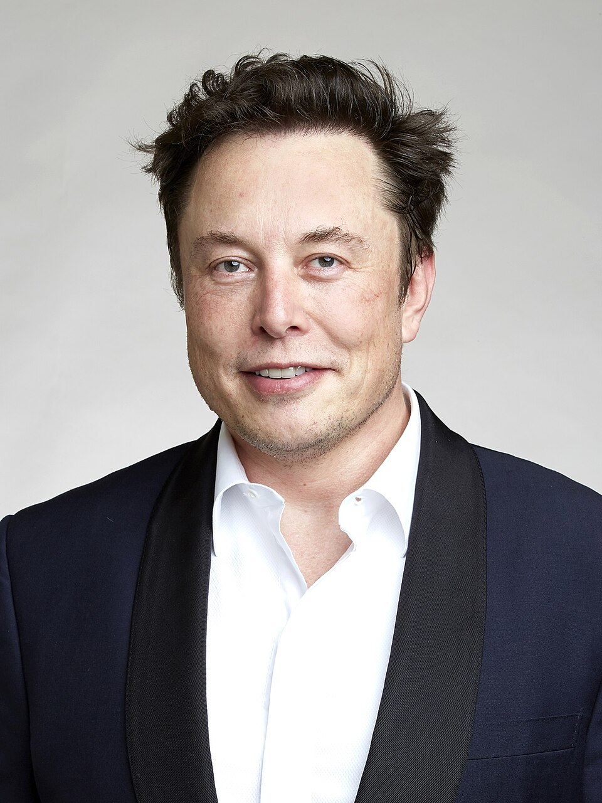

Pochodzi z Południowej Afryki[10]. Urodził się i wychował w stołecznej Pretorii, w białej rodzinie. Jego ojciec, inżynier Errol Musk[w innych językach], urodził się w Południowej Afryce jako syn Brytyjki i Południowoafrykańczyka, natomiast matka, modelka i dietetyczka Maye Musk, ma po ojcu amerykańskie pochodzenie i przyszła na świat w Kanadzie[11][12]. W 1950 wyjechała z rodzicami do Południowej Afryki[11]. Elon ma dwoje młodszego rodzeństwa: brata Kimbala[w innych językach] i siostrę Toscę[12].
Po rozwodzie rodziców w 1980 Elon mieszkał głównie z ojcem[11]. Kiedy miał 10 lat, dostał pierwszy komputer i nauczył się programować[13]. Dwa lata później sprzedał swój pierwszy program – grę komputerową Blastar za około 500 dolarów[13].
Jako nastolatek uczęszczał do Pretoria Boys High School, którą ukończył w wieku 17 lat. Krótko później, częściowo z chęci uniknięcia obowiązkowej służby wojskowej w Południowoafrykańskich Siłach Obronnych (SADF), wyemigrował do Kanady, gdzie mieszkała rodzina jego matki[13]. Planował przeniesienie się do Stanów Zjednoczonych[14][15].